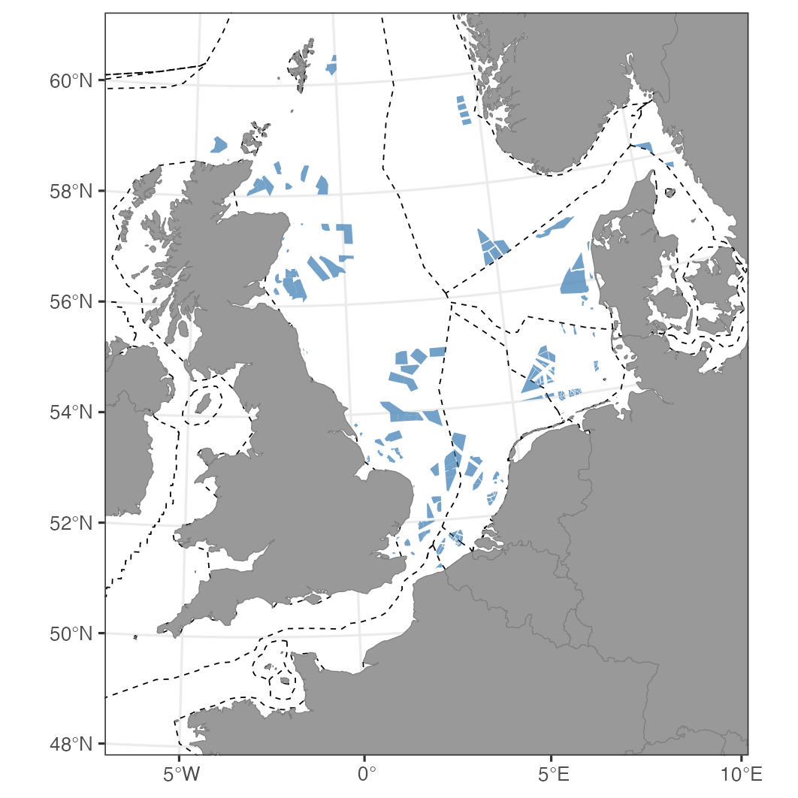

In the guide to making a map we use animal
tracking data to define the region of interest. You don’t have to:
mapr() only needs a table with lon and
lat columns, so two corner points are enough to describe a
study area.
This guide shows how using mapr in combination with
publicly available datasets we can quickly map the offshore wind farms
expected in the North Sea by 2030, with maritime boundaries, and no
tracking data at all.

Getting the data
Wind farm footprint data are available from the recent paper by Critchley et al. published in Journal of Applied Ecology. The dataset is available through Zenodo and can be read directly into R from the website.
Data on marine boundaries are available through Marine Regions and can be
queried through the mregions2 package and filtered to the
North Sea states.
library(sf)
library(mregions2)
library(mapr)
library(ggplot2)
# Wind farm footprints
owf_poly <- st_read("/vsicurl/https://zenodo.org/records/10478448/files/North_Sea_OWF_2030_polygons.shp")
# EEZ boundaries for the North Sea states
ns_states <- "('GBR','NOR','DNK','DEU','NLD','BEL','FRA')"
eez_lines <- mrp_get(
"eez_boundaries",
cql_filter = paste("sovereign1 IN", ns_states, "OR sovereign2 IN", ns_states)
)Getting a shapefile from mapr
Rather than a set of tracks, give mapr() the two corners
of the area you want. The buff argument then extends the
coastline beyond them, and scale = "large" asks for the
highest resolution Natural Earth coastline, which is worth it at this
scale because so much of the map is coastline:
prj <- "+proj=utm +zone=30 +datum=WGS84 +units=m +no_defs"
corners <- data.frame(lon = c(-10, 15), lat = c(45, 65))
land <- mapr(corners, prj, buff = 2e5, scale = "large")scale = "large" needs the
rnaturalearthhires package, which is not on CRAN:
install.packages("rnaturalearthhires",
repos = "https://ropensci.r-universe.dev")The map
Boundaries first, so the land sits over them, then the wind farms on top. The limits are in metres, because the projection is:
ggplot() +
theme_bw(base_size = 8) +
geom_sf(data = eez_lines, colour = "black", linetype = "dashed", linewidth = .2) +
geom_sf(data = land, colour = "grey50", fill = "grey60") +
geom_sf(data = owf_poly, colour = NA, alpha = 0.75, fill = "steelblue") +
coord_sf(xlim = c(200000, 1500000), ylim = c(5300000, 6800000), crs = prj, expand = FALSE)Both external layers arrive as sf objects with their own
coordinate reference systems, and neither is projected here.
coord_sf() reprojects every layer to prj as it
draws, so they line up with the land without any
st_transform() calls.
To add the map furniture from the main guide,
build the frame from the same corner coordinates you gave
mapr(), and remember that buff needs to be
large enough for the land to reach past the frame on every side.
Footnote
The two layers above are read straight off the web, with nothing downloaded by hand. This can be useful if you don’t want to store data locally or when files may be remotely updated and you want the most recent data set.
EMODnet also supplies shapefiles on windfarm locations and status, and can be accessed as follows:
wfs <- "https://ows.emodnet-humanactivities.eu/wfs"
owf_emod <- st_read(paste0(
"WFS:", wfs,
"?service=WFS&version=2.0.0&request=GetFeature&typeName=emodnet:windfarmspoly"
))
# Check windfarm build status
table(owf_emod$status)The status column separates farms in production from
those approved, under construction or planned, so it’s worth looking at
the table before filtering: the wording of those categories changes from
one version of the dataset to the next.
This layer would drop into the map above with another
geom_sf() call, in whatever projection it happens to arrive
in, because coord_sf() does the reprojecting.
Sources
Wind farm footprints: https://zenodo.org/records/10478448
Maritime boundaries: Flanders Marine Institute, Marine Regions, https://www.marineregions.org/
Check the licence and citation for each before using either in published work.